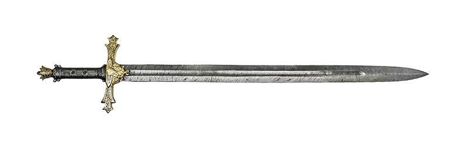

Bastardsword
The Bastardsword was balanced in such a way that it could be wielded with either one or two hands, making it an intermediate form between the long sword and the knightly sword. Typically, the blade length ranges from 41 inches (1.0 m) to 47 inches (1.2 m), with a weight of 3 pounds (1.4 kg) to 4.1 pounds (1.9 kg).